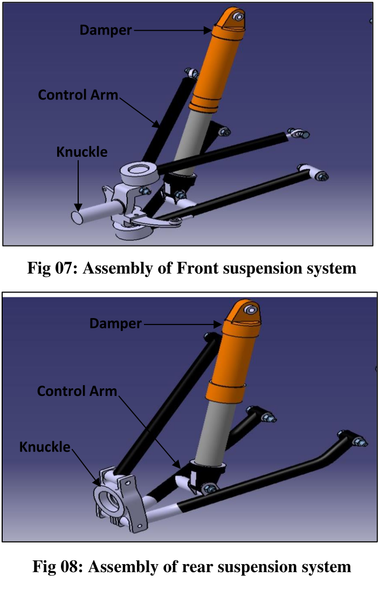
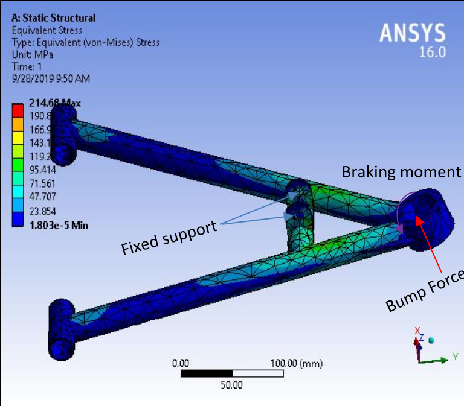
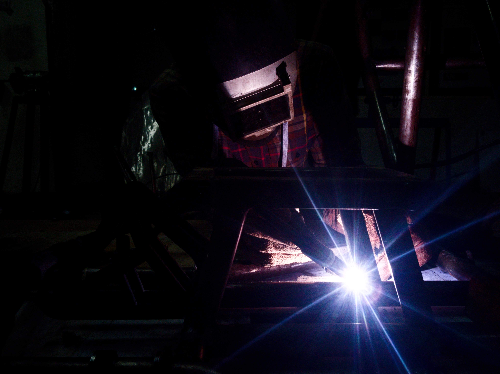
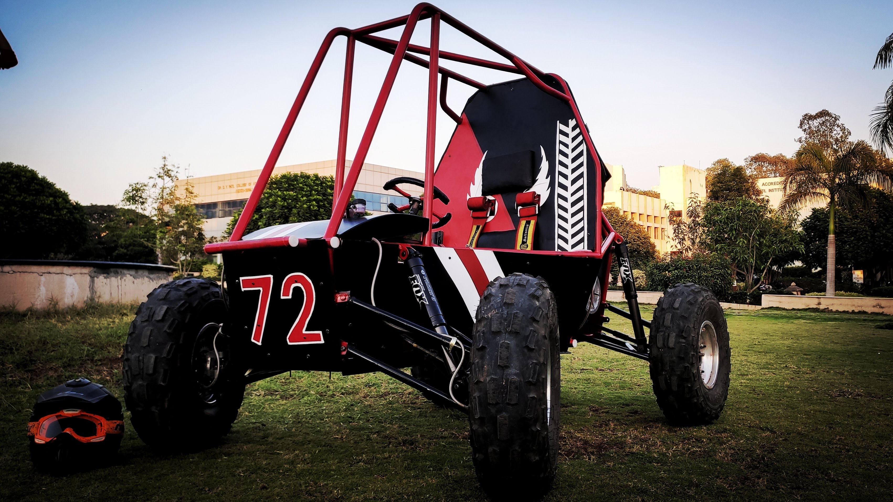

Motivation & Objectives
The SAE BAJA competition challenges engineering students to design and build an All-Terrain Vehicle (ATV) capable of surviving severe punishment on rough terrain. The tracks include rock crawls, steep gradients, and suspension-shattering drops.
The core motivation was to move beyond a simple "survival" design to a performance-oriented system. We needed to maximize the contact patch of the tire during cornering (handling) and minimize the unsprung mass (acceleration), while adhering to strict rulebook constraints regarding width and safety. The objective was to design a Double Wishbone system that decouples vertical wheel motion from camber changes, offering superior tunability over MacPherson struts.
Methodology
Kinematic Design
Using Lotus Shark software, we iteratively adjusted hardpoint locations (chassis and knuckle points).
- Target: < 0.5° Bump Steer
- Target: Negative Camber gain in bump
- Optimization of Roll Center height
CAD Modeling
3D modeling in SolidWorks. Designed custom knuckles to accommodate the specific KPI and Caster angles derived from kinematics.
- Clearance checks for steering (Ackermann)
- Shock mounting for 0.7 Motion Ratio
- Parametric design for quick edits
FEA & Fabrication
Static structural analysis in ANSYS. Material selected: AISI 4130 (Chromoly) for its high strength-to-weight ratio.
- Load Case: 3G Bump (Vertical)
- Load Case: 1G Braking + 1G Cornering
- TIG Welding for final assembly
Theoretical Framework
Ride Frequency ($f_n$)
We selected a higher natural frequency for the rear to ensure pitch stability over bumps (flat ride concept).
Spring Rate Calculation
The spring rate ($K_s$) is derived from the wheel rate ($K_w$) and the motion ratio ($MR$) squared.
Results: Kinematic Optimization
The graph below illustrates our optimized Camber Gain. As the suspension compresses (positive travel), the camber becomes more negative. This is critical: as the car rolls in a turn, the outside tire (which carries the load) loses camber relative to the chassis. By designing camber recovery into the geometry, we keep the tire flat on the ground.
From Concept to Reality
Testing Footage
Low res visuals, high res ideasCATIA V5 Assembly
ANSYS Stress Analysis
Fabrication (TIG Welding)
Final Assembly
Detailed Project Report
Access the full documentation including calculation sheets, complete BOM, cost analysis, and detailed DVP (Design Validation Plan).
Applications & Impact
The principles of kinematics applied here are not limited to racing. They are critical in:
- Military Tactical Vehicles: Where terrain adaptability is a matter of survival.
- Planetary Rovers: Where independent suspension allows traversal of unknown alien topography.
The project achieved a 15% weight reduction in unsprung mass compared to the previous iteration, directly improving acceleration and suspension response.
References
- [1] Milliken, W.F. & Milliken, D.L. (1995). Race Car Vehicle Dynamics. SAE International.
- [2] Smith, Carroll. (1978). Tune to Win. Aero Publishers.
- [3] Gokhale, N. et al. (2008). Practical Finite Element Analysis. Finite To Infinite.